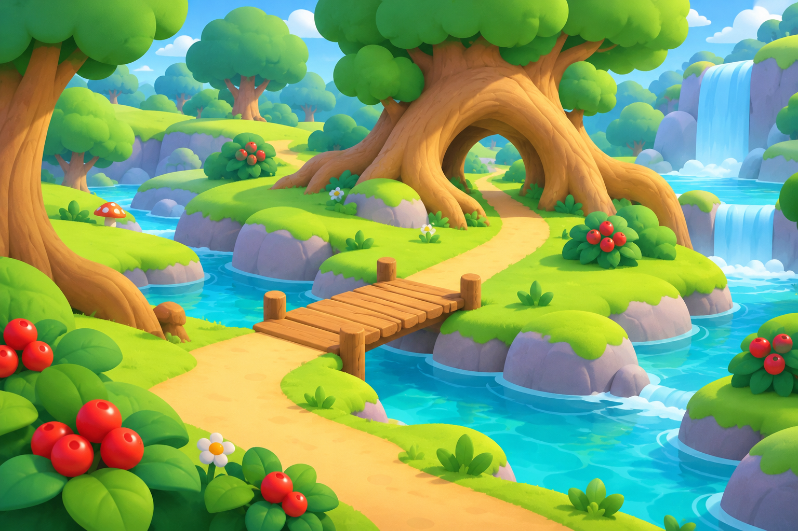
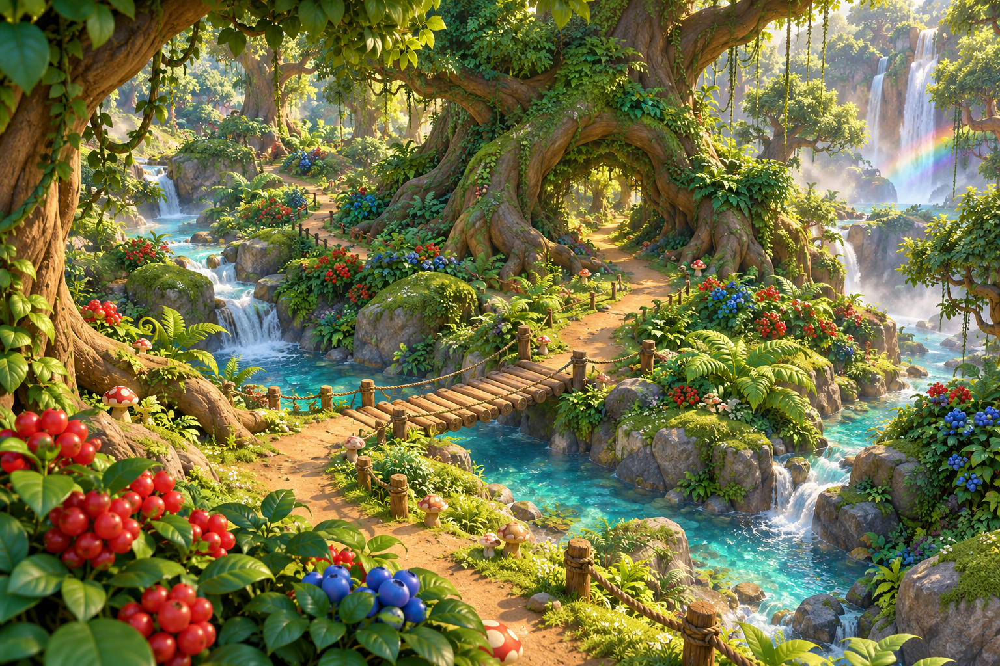

保留页游的辨识度，
让材质和光影自然起来。
以实际查看的旧版地图存档为参考，重新安排溪流、树干桥、藤蔓大树与洞口。控制细节密度，恢复适量的树皮、岩石与枝叶层次。

克制夸张，保留自然层次
地标按存档可见位置组织，以适量纹理和树荫表达质感。三维比例与遮挡细节仍需继续校对。
旧版地图存档来源 ↗ · 第三方存档带活动内容，具体年代与版本尚未确认。
前两次试作

形体与光照简化过头
过亮的草地和圆团造型，削弱了自然质感与林地氛围。

细节与装饰过于密集
写实表面和密集植被，让画面显得繁复，削弱了卡通感。
地标有依据
覆叶树干桥、垂藤大树和木栅洞口，都以存档中的可见画面为依据。
材质有分寸
保留木纹、岩石层次与自然枝叶，在草地和路线周围留出安静区域。
光影有氛围
透过树冠的明暗与柔和阴影建立空间，减少玩具感和荧光色。